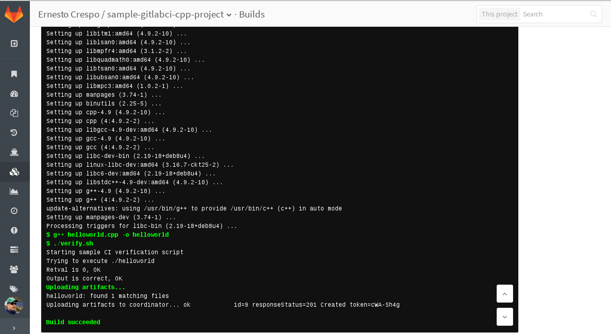

Ejecutar una prueba de integración continua con gitlab-ci y gitlab-runner.
Publicado el jue 16 junio 2016 en Tutorial de integración continua • 2 min de lectura
En artículos anteriores se explicó como usar gitlab-ce y gitlab-runner por medio de contenedores y conectarlos para la integración continua.
Para que funcione docker por medio de gitlab-runner es necesario modificar la configuración del runner agregando el nombre y la ip de la máquina como se muestra a continuación (archivo /etc/gitlab-runner/config.toml):
concurrent = 1
[[runners]]
name = "Sample gitlab-ci cpp project"
url = "http://12.168.0.60:9080t/ci"
token = "5faac16d0aaf8f97fd66f5f586ed9f5f"
executor = "docker"
[runners.docker]
tls_verify = false
image = "debian"
privileged = false
disable_cache = false
volumes = ["/cache"]
extra_hosts = ["culata.dst:192.168.0.60"]
[runners.cache]
Insecure = false
Luego de modificar el archivo se ejecuta:
gitlab-runner restart
En el artículo del runner se tiene registrado un proyecto llamado sample-gitlabci-cpp-project tomado de github.
Contiene lo siguiente:
sample-gitlabci-cpp-project
├── helloworld.cpp
├── README.md
└── verify.sh
El archivo helloworld.cpp tiene lo siguiente:
// 'Hello World!' program
#include <iostream>
int main()
{
std::cout << "Hello World!" << std::endl;
return 0;
}
El archivo verify.sh es el que genera la construcción:
1 2 3 4 5 6 7 8 9 10 11 12 13 14 15 16 17 18 19 20 21 22 | #!/bin/bash
echo "Starting sample CI verification script"
echo "Trying to execute ./helloworld"
OUTPUT=`./helloworld`
RETVAL=$?
if [ $RETVAL -eq 0 ]; then
echo "Retval is 0, OK"
else
echo "Retval is not 0, FAIL"
exit 1
fi
if [ "$OUTPUT" == "Hello World!" ]; then
echo "Output is correct, OK"
else
echo "Output is not right, FAIL"
exit 1
fi
|
Se tiene otro archivo que está oculto con nombre .gitlab-ci.yml, que contiene el proceso de construcción del contenedor docker con la ejecución del verify.sh:
# Specify the docker image to use (only used if using docker runners)
# See: http://doc.gitlab.com/ee/ci/docker/using_docker_images.html
image: debian
# Define commands that run before each job's script
before_script:
- apt-get update
- apt-get install -y gcc g++
# Try to compile our sample hello world app
compile:
script:
# Compile our app
- g++ helloworld.cpp -o helloworld
# Verify that our compiled app works properly with a custom "test" script
- ./verify.sh
# Save the compiled output from the above for downloading via GitLab and in Gitlab 8.6 to use in future build steps
artifacts:
paths:
- helloworld
Ahora sólo queda ir a la sección build del proyecto y ejecutar un build, la siguiente figura muestra la ejecución del build como tal:

Como se ve en la figura la construción se dió sin problemas.
En siguientes artículos se mostrará el uso con node.js con Django.
¡Haz tu donativo! Si te gustó el artículo puedes realizar un donativo con Bitcoin (BTC) usando la billetera digital de tu preferencia a la siguiente dirección: 17MtNybhdkA9GV3UNS6BTwPcuhjXoPrSzV
O Escaneando el código QR desde la billetera: